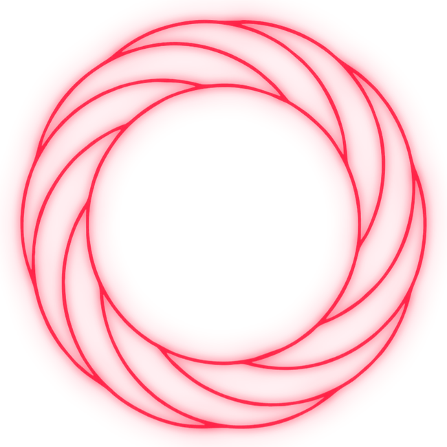

FAIXA [ 0 / 0 ]
NENHUM RITUAL CARREGADO
00:00
00:00

NENHUM RITUAL ATIVO
Toque em INJETAR para subir áudios do seu iPhone ou carregue a trilogia principal:
// MEMÓRIA LOCAL: FUNCIONA 100% OFFLINE COM TELA APAGADA